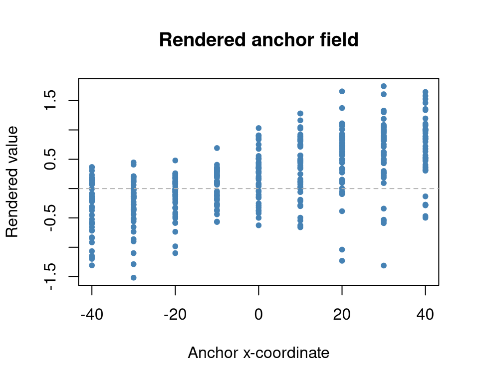
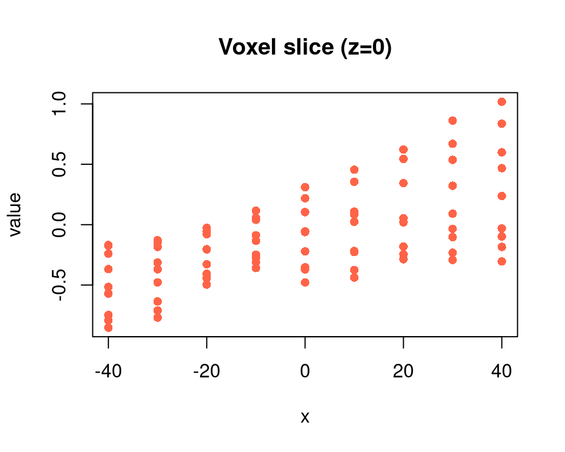

The dense rendering stack provides a mechanism for converting subject-specific cluster values into a shared anchor space, with the option to interpolate these values back to full voxel grids. This capability enables spatial visualization and analysis of group-level patterns. In this vignette, we demonstrate how to assemble rendering pipelines and interpret the associated diagnostic outputs.
Toy Dataset with Centroids
We begin by constructing a synthetic dataset that includes both beta coefficients and spatial centroids for each subject. This setup will allow us to demonstrate the rendering pipeline with concrete spatial coordinates.
library(dkge)
S <- 4; q <- 3; P <- 20; T <- 50
betas <- replicate(S, matrix(rnorm(q * P), q, P), simplify = FALSE)
designs <- replicate(S, {
X <- matrix(rnorm(T * q), T, q)
qr.Q(qr(X))
}, simplify = FALSE)
centroids <- replicate(S, matrix(runif(P * 3, -40, 40), P, 3), simplify = FALSE)
subjects <- lapply(seq_len(S), function(s) dkge_subject(betas[[s]], designs[[s]], id = paste0("sub", s)))
bundle <- dkge_data(subjects)
fit <- dkge(bundle, K = diag(q), rank = 2)
fit$centroids <- centroids # attach for transport helpers; pass explicitly in productionBuilding an Anchor Renderer
The next step involves constructing a renderer object that will handle the mapping between subject-specific cluster coordinates and a shared anchor space. This process requires defining a target voxel grid and specifying the transport parameters.
# use 5k anchors sampled from grey-matter-like cube
vox_xyz <- as.matrix(expand.grid(seq(-40, 40, by = 10), seq(-40, 40, by = 10), seq(-40, 40, by = 20)))
renderer <- dkge_build_renderer(
fit,
centroids = centroids,
vox_xyz = vox_xyz,
mapper = dkge_mapper("sinkhorn", epsilon = 0.05, lambda_xyz = 1, lambda_feat = 0),
graph_k = 10,
decoder_k = 8,
anchor_n = min(500L, nrow(vox_xyz)),
anchor_method = "sample"
)
str(renderer, max.level = 1)
#> List of 8
#> $ anchors : num [1:405, 1:3] -40 -30 -20 -10 0 10 20 30 40 -40 ...
#> ..- attr(*, "dimnames")=List of 2
#> $ graph :List of 4
#> $ decoder :List of 6
#> $ mapper :List of 2
#> ..- attr(*, "class")= chr [1:2] "dkge_mapper_sinkhorn" "dkge_mapper"
#> $ mapper_fits :List of 4
#> $ weights : num [1:4] 0.874 1.063 0.904 1.159
#> $ anchor_feats: NULL
#> $ mapper_stats:List of 4The resulting renderer object contains several key components that facilitate the rendering process:
-
anchors: The shared anchor coordinates that are automatically derived from the inputvox_xyzgrid and serve as the common reference space. -
graph: An optional k-nearest neighbor graph and associated Laplacian matrix that enables spatial smoothing across anchors. -
mapper_fits: Subject-specific mapper objects that contain cached Sinkhorn dual variables for efficient repeated computations. -
mapper_stats: Comprehensive transport diagnostics including costs, entropies, and support sizes that help assess the quality of the mapping.
Rendering Subject Values
With the renderer in place, we can now transform subject-specific cluster values into the shared anchor space and interpolate them to the full voxel grid. This process applies optimal transport to map values while preserving spatial relationships.
values_list <- lapply(fit$Btil, function(Bts) as.numeric(Bts[1, ]))
rendered <- dkge_render_subject_values(renderer, values_list, lambda = 0.2, to_vox = TRUE)
summary(rendered$details$y)
#> Min. 1st Qu. Median Mean 3rd Qu. Max.
#> -1.519 -0.162 0.185 0.209 0.633 1.746
head(rendered$details$subject_stats)
#> [[1]]
#> [[1]]$transport_cost
#> [1] 19.9
#>
#> [[1]]$plan_entropy
#> [1] 6.01
#>
#> [[1]]$effective_support
#> [1] 415
#>
#> [[1]]$epsilon
#> [1] 0.05
#>
#>
#> [[2]]
#> [[2]]$transport_cost
#> [1] 17.9
#>
#> [[2]]$plan_entropy
#> [1] 6.01
#>
#> [[2]]$effective_support
#> [1] 417
#>
#> [[2]]$epsilon
#> [1] 0.05
#>
#>
#> [[3]]
#> [[3]]$transport_cost
#> [1] 20.8
#>
#> [[3]]$plan_entropy
#> [1] 6.02
#>
#> [[3]]$effective_support
#> [1] 427
#>
#> [[3]]$epsilon
#> [1] 0.05
#>
#>
#> [[4]]
#> [[4]]$transport_cost
#> [1] 19.2
#>
#> [[4]]$plan_entropy
#> [1] 6.01
#>
#> [[4]]$effective_support
#> [1] 421
#>
#> [[4]]$epsilon
#> [1] 0.05The rendering process produces several important outputs that capture different aspects of the spatial transformation:
-
rendered$anchor: The smoothed group field values defined on the anchor coordinates, representing the primary output of the transport process. -
rendered$voxel: The interpolated voxel map with length equal tonrow(vox_xyz), providing values for the complete target grid. -
details$plan_entropy_mean: The average diffusion of transport plans across subjects, where higher values indicate broader anchor coverage and more diffuse mapping patterns.
To examine the spatial structure of the rendered field, we can visualize how the anchor values vary along a single spatial dimension.
plot(renderer$anchors[, 1], rendered$anchor, pch = 20, col = "steelblue",
xlab = "Anchor x-coordinate", ylab = "Rendered value",
main = "Rendered anchor field")
abline(h = 0, col = "grey70", lty = 2)
Voxel Map Snapshot
We can further inspect the interpolated results by examining specific slices of the voxel grid. This provides insight into how the anchor-based smoothing affects the final voxel-level representation.
sel <- vox_xyz[, 3] == 0 # slice at z = 0
plot(vox_xyz[sel, 1], rendered$voxel[sel], pch = 16, col = "tomato",
xlab = "x", ylab = "value", main = "Voxel slice (z=0)")
Practical Considerations
Several important parameters and features can be adjusted to optimize the rendering process for specific applications:
- The
lambdaparameter indkge_render_subject_values()controls the trade-off between fidelity to the original data and spatial smoothness. Users should monitor theplan_entropy_meandiagnostic to assess whether the current settings lead to excessive or insufficient smoothing. - Incorporating additional latent features through the
subject_featsandanchor_featsarguments indkge_build_renderer()allows the transport costs to reflect both spatial proximity and functional similarity, potentially improving the biological relevance of the mappings. - The renderer automatically caches Sinkhorn dual variables, which means that repeated rendering calls (such as those required for bootstrap replicates) can efficiently reuse warm starts, significantly reducing computational overhead.